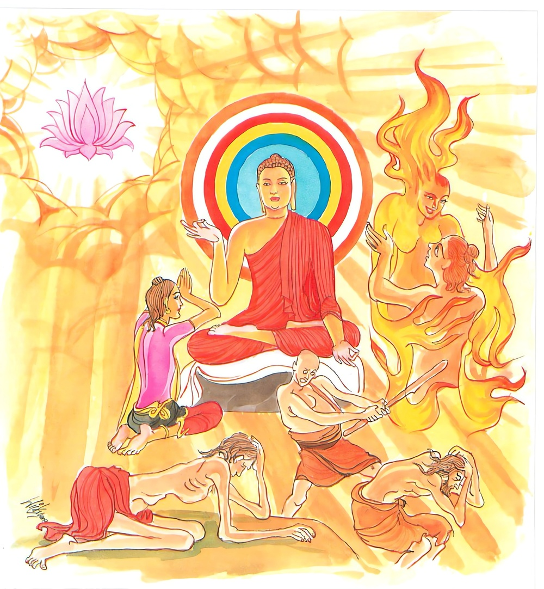

15-4 කුලදැරියකගේ ආවාහය
මෙම කතාව ධම්මපද අටුවාවෙන් ද කියවන්න.
නත්ථි රාගසමො අග්ගි නත්ථි දොසසමො කලි
නත්ථි ඛන්ධසමා දුක්ඛා නත්ථි සන්තිපරං සුඛං.
රාගය හා සම ගින්නෙක් නැත. ද්වේෂය හා සම අපරාධයෙක් නැත. පඤ්චස්කන්ධ දුඃඛය හා සම දුකෙක් නැත. නිර්වාණ සැපයට වැඩි තරම් සුවයෙක් නැත.

එක් කුලදැරියක ආවාහ කොට ගෙණ ඇයගේ මවුපියෝ මගුල් දවසෙහි දානය පිණිස බුදුරජානන් වහන්සේට ආරාධනා කළහ. උන්වහන්සේ භික්ෂු සමූහයාත් කැටුව එහි මගුල් ගෙට වැඩම කොට පණවා තුබූ අසුන්හි වැඩහුන් සේක. ඒ කුල කුමරිය ද භික්ෂු සඞ්ඝයා වහන්සේට පැන් පෙරා දීම් ඈ කුදු මහත් වතාවත් සොයා බලා කරන්නී දාන ශාලාවෙහි තැන තැන හැසුරුනී ය. ඇයගේ ස්වාමිපුත්රයා මෙසේ වතාවත් කරමින් හැසුරුණු සිය බිරියගේ “ඇඟපත කදිම ය, මුහුණ පැහැපත්ය, කෙස් වැටිය මොනරපිල් කළඹක් සේ ය, දත් මුතු ඇට වැනිය, පියවුරු නෙරා සිටියේ ය, පා ඉතා යහපත්ය” යි ඒ ඒ අවයව දෙස බලමින් සිතමින් එහි රැඳී සිටියේ ය. මෙසේ බිරියගේ ඒ ඒ අඟපසඟ රාග විසින් බලමින් සිටි ඔහුගේ සිත්තුළ රාගය නැගී ගත්තේ ය. රාගයෙන් මැඩුනු මෙතෙමේ නුවණින් ගිලිහුනේ බුදුරජුන්ට වේවයි අසූ මහ සව්වන්ට වේවයි කිසිත් උවැටනක් කිරීමෙහි අපොහොසත් ව ගියේ “අත දිගු කොට බිරිය අල්ලා ගණිමි” යි සිතමින් සිටියේ ය. එවේලෙහි බුදුරජානන් වහන්සේ ඔහුගේ අදහස් දැන ඔහුට ඒ කුලදැරිය නො පෙණෙන ලෙසක් කළ සේක. එවිට ඔහු සිය බිරිය නො පෙණීගියෙන් බුදුරජුන් දෙස බලන්නට වන. උන්වහන්සේ තමන් වහන්සේ දෙස බලා සිටි ඔහුට “දරුව! රාගය තරම් ගින්නෙක් ද්වේෂය තරම් අපරාධයෙක් ස්කන්ධපරිහරණය තරම් දුකෙක් නැත්තේ ය, එසේ ම නිවන්සුව තරම් සුවයෙකුත් නැතැ” යි වදාරා මේ ධර්මදේශනාව කළ සේක.
නත්ථි රාගසමො අග්ගි නත්ථි දොසසමො කලී,
නත්ථි ඛන්ධසමා දුක්ඛා නත්ථි සන්තිපරං සුඛන්ති.
රාගය හා සම වූ ගින්නෙක් නැත. ද්වේෂය හා සම වූ අපරාධයෙක් නැත. ස්කන්ධ හා සම වූ දුක් නැත. නිවනට වැඩිතරම් වූ සුවයෙක් නැත.
නත්ථි රාගසමො අග්ගි = රාගය හා සම වූ ගින්නෙක් නැත.
ඒ ඒ අරමුණුවල රැදීම්-ඇලීම් අරුතින් එක්වැදෑරුම් වූ රාගය භූමිභේදයෙන් කාමරාග-රූපරාග-අරූපරාග යි තෙවැදෑරුම් වේ. එහි වස්තුකාමයන්හි රැදීම් ඇලීම් විසින් උපදනා ඡන්දරාගය කාමරාග නමි. බ්රහ්මපාරිෂද්යාදී වූ සොළොස් බඹතලයන්හි ඉපැත්මට හේතුවන ඡන්දරාගය රූපරාග නමි. ආකාසානඤ්චායතනාදී වූ සිවුවැදෑරුම් බඹතලයෙහි ඉපැත්මට හේතු වන ඡන්දරාගය අරූප රාග නමි. මෙසේ රාගයෙහි ඉපැත්මට තැන් වූ කරුණු බොහෝ බැවින් ඒ වශයෙන් රාගය අතිවිස්තාරයට ගියේ ද, බුදුරජාණන් වහන්සේ, ඒ හැම රාගය යි වදාළ සේක. ඒ මේ රාගය සත්ත්වසන්තානය තවන දවන බැවින් අග්ගි යි වදාරණ ලදි. මේ ලක්දිව සිතුල් පවුවෙහෙර පොහෝ ගෙට ගොස් එහි වූ විසිතුරු වූ දොරටුපල් රුවක් බලමින් සිටි දහර මෙහෙණකගේ සිත්හි රාගය උපන. එය ඉවසා ගත නුහුනු ඕ තොමෝ එයින් ම දැවී කලුරිය කළා ය. “රාගො උප්පජ්ජමානො සතෙත අනුදහති ඣාපෙති තස්මා අග්ගිති වුච්චති” යනු කීයේ එහෙයිනි.
රාගය, රාගී පුද්ගලයා දවනුයේ දුම් නගා ගිනිසිළු උපදවා. අඟුරු දක්වා නො වේ. ඇතුළත සිට ඇතුළත ම දවන්නේ ය. එසේ දුම් ගිනිසිළු අඟුරු නො දක්වා ඇතුළත හට ගෙණ ඇතුළත දවන්නට සමර්ත්ථ වූ අන් ගින්නෙක් කො තැනත් නැත්තේ ය. මේ අටුවා:- “ධූමං වා ජාලං වා අඞ්ගාරං වා අදස්සෙත්වා අන්තොයෙව ඣාපෙත්වා භස්මමුට්ඨිං කාතුං සමත්ථො රාගෙන සමො අඤ්ඤො අග්ගි නාම නත්ථි” යනු.
තවද රාගය පළිබෝධයක් බැවින් කිඤ්චනැ යි ද තීව්ර ක්ලේශයක් බැවින් අඞ්ගනැ යි ද සත්ත්වසන්තානය කිලිටි කරණ බැවින් මලැ යි ද සසුනෙන් හා සුගතියෙන් පැකිළ වැටෙන බැවින් විසමැ යි ද අප්රණීත බැවින් කසටැ යි ද නම් කරණ ලද්දේ ය.
රාග යනු තෘෂ්ණා වෙවචනයක් බැවින් මෙහි “දුක්ඛසමුප්පාදං” යන්නට කළ පරිකථාව බලා විස්තර දත යුතුය. “රාගොති තණ්හාය එතං වෙවචනං” යනු යුත්තිහාරවිභඞ්යෙහි කියන ලද්දේ ය. ඒ ඒ වස්තුන් විෂයයෙහි එක් ම තෘෂ්ණාව ඒ ඒ අවස්ථානුරූප ව ක්රියාත්මක වන අයුරු දක්වනු පිණිස ඒ ඒ ස්ථලයන්හි බුදුරජානන් වහන්සේ ආසා - පිහා - රාගො - ඡන්දො - පෙමං - පරිදාහො - ඉචඡා - සලලං - ධූපායනා - සරිතා - විසත්තිකා - සිනෙහො - කිලමථො - ලතා - මඤ්ඤනා - බන්ධො - පිපාසා - නන්දනා - අභිනන්දනා යනාදි නම් විසින් දක්වා වදාළ සේක. දේශනා කාලයෙහි හෝ ඉන් මොබ හෝ කවරක්හට හෝ කෙසේ හෝ ඒ ඒ ධර්මපදයන්ගේ යථාර්ත්ථය ගැන්වීම පිණිස, අන් අරමුණු කරා ගිය සිත් ඇත්තවුනට අන් ක්රමයක් ගෙණ අර්ත්ථ ගන්වනු පිණිස, මන්ද බුද්ධිකයනට පුන පුනා ඒ ඒ අරුත් සලකා ගැණීමෙහි නො මුළා බව පිණිස සමාන ව්යඤ්ජන ඇති පදයෝ නන් අරුත්ගෙණ සිටිත්. එහෙයින් එබන්දෙහිලා අන් අරුත් ගැණ යම් යම් පරිකල්පනාවෝ වෙත් ද එය වළකනු පිණිස වෙවචන යෙදූහ.
නත්ථි දොසසමො කලී = ද්වේෂය හා සමාන අපරාධයෙක් නැත.
දොස නම්: තමන් සිත් නො ගත් අරමුණු හා ගැටීමෙන් සිතෙහි උපදනා සැඩගතිය යි
කලි නම්: අපරාධය යි. යමකින් ත්රිවර්ගසම්පත්තිය බිඳ වැටේ නම් පිරිහේ නම් ඒය අපරාධ. ද්වේෂය, කලි යි වදාළෝ එහෙයිනි. කලි ශබ්දය “විචිනාති මුඛෙන සො කලීං” යන මෙහි පාපයෙහි ද “උභයත්ථකලිග්ගාහො” යන මෙහි පරාජයෙහි ද “නත්ථි දොස සමො කලි” යන මෙහි අපරාධයෙහි ද ආයේ ය. තවද විවාද - යුද්ධ - ශුර - කලියුග - එළඅත්තන - බදුලුගස - බුළුගස - මල්කැකුළ යන මෙ ඈ අරුත්හි ද වැටේ.
නත්ථි ඛන්ධසමා දුක්ඛා = ස්කන්ධ හා සම වූ දුක් නැත.
ඛන්ධ නම්: රූප වේදනාදීහු ය. නින්දා කටයුතු බැවින් හා තුච්ඡ බැවින් ස්කන්ධ පස දුක් ය. මෙසේ ස්වභාව විසින් ම දුක් වූ ඒ ස්කන්ධයන්ගේ පරිහරණය බෙහෙවින් ම දුක් ය. ස්කන්ධපරිහරණය පහසු නැත. නියමිත වේලාවෙහි නැගිටීමෙන් සේදීමෙන් කැවීමෙන් පෙවීමෙන් ඉඳීමෙන් සිටීමෙන් නිදීමෙන් සක්මන් කිරීමෙන් උතුගැන්වීමෙන් මැඩීමෙන් නස්යයෙන් විරේකයෙන් තෙල් ගැල්වීමෙන් උණු දියෙන් සිහිල් දියෙන් අව්වෙන් වැස්සෙන් රැකිය යුතු ය. වැඩිය යුතු ය. මේ එකකුත් යථාවිධියෙන් නො වීමෙන් ස්කන්ධ පස ම එකවිට රෝගාතුර වන්නේ ය. ස්කන්ධ සම වූ දුක් නැතැ යි වදාළෝ එහෙයිනි.
නත්ථි සන්තිපරං සුඛං = නිවනට වැඩිතරම් වූ සැපයෙක් නැත.
දුක් සන්සිදීමට අරමුණු වන්නේ යමෙක් වේ නම් ඒය ශාන්තිය. දුක් සන්සිඳීමෙන් පසු ජාතිජරාමරණාදී වූ කිසි දුකෙක් නො වන්නේය. මෙයින් භාවෝත්පත්තිය මුළුමනින් නැසී යන්නීය. එහෙයින් නිවනට වැඩිතරම් වූ සැපයෙක් නැතැ යි වදාළ සේක.
ධර්මදේශනාවගේ අවසානයෙහි ඒ කුලදැරිය හා කුලදරු සෝවන්පලයෙහි පිහිටියහ. එකල්හි බුදුරජානන් වහන්සේ උනුන් දක්නා ලෙසට ඍද්ධිය හළ සේක.
අන්යතර කුලදාරිකා වස්තුව නිමි.